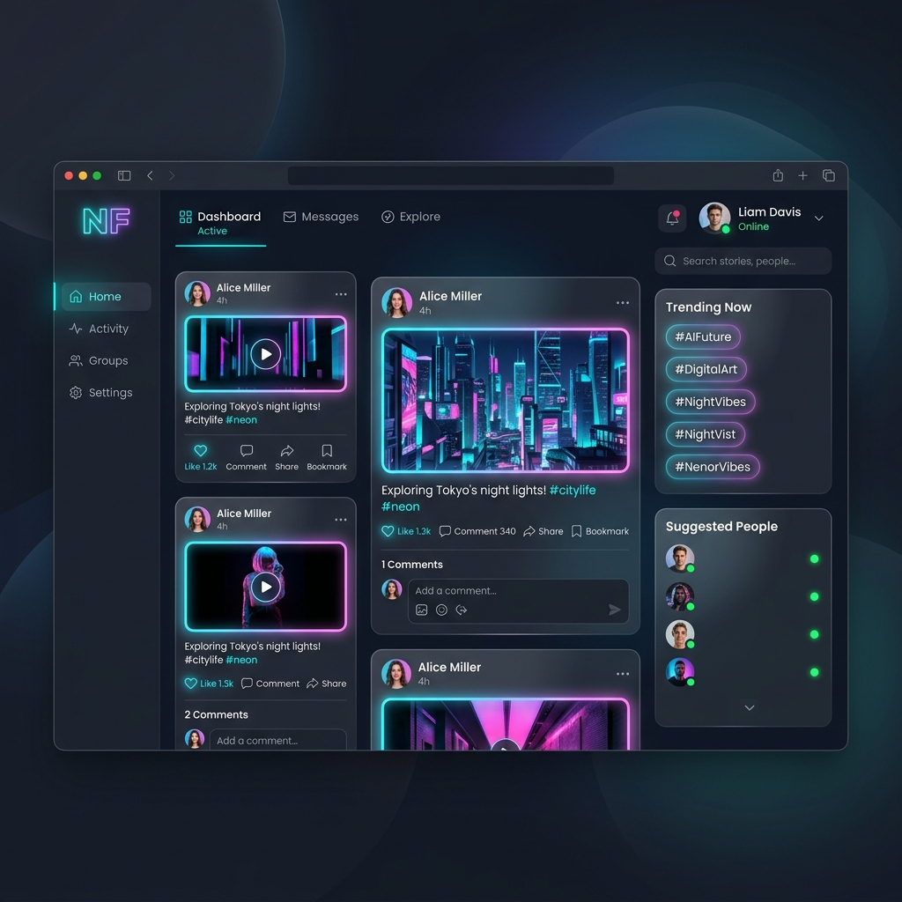

Social Connect Platform
A scalable social networking platform featuring real-time updates and a sleek glassmorphism UI.

Overview
This is a placeholder project details page. A real Social Connect Platform would focus on connecting users, facilitating real-time chat, and providing an interactive feed of user-generated content.
Technologies Used
- Frontend: React.js, WebSockets for live chat
- Backend: ASP.NET Core, C#
- Database: SQL Server, Entity Framework Core
- Styling: Vanilla CSS with Glassmorphism techniques
Key Features
Features include a live news feed, instant messaging, user profile customization, and secure authentication via ASP.NET Identity.